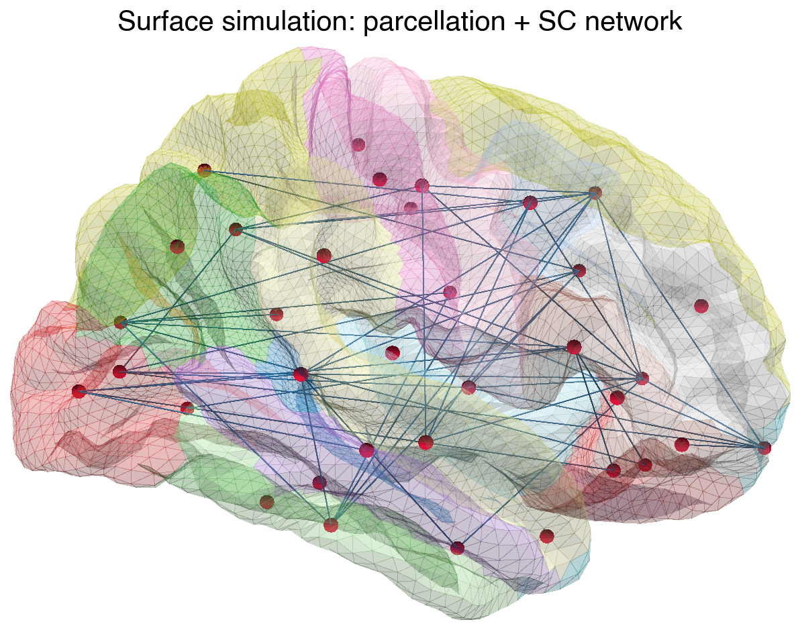

from tvbo import NetworkDefining Networks
How to create, visualize, save, and load brain network connectivity
A Network describes the connectivity structure between brain regions: nodes (regions) connected by weighted edges (tracts). TVBO provides several ways to create networks — from inline YAML, from matrices, from files, or from the tvbo platform.
1. From YAML Strings
The simplest way to define a small network. Each node has an id and label; each edge connects a source to a target with optional parameters.
net = Network.from_string("""
label: Visual Pathway
nodes:
- {id: 0, label: V1}
- {id: 1, label: V2}
- {id: 2, label: MT}
edges:
- source: 0
target: 1
parameters:
weight:
value: 0.7
distance:
value: 25
unit: mm
- source: 1
target: 2
parameters:
weight:
value: 0.4
distance:
value: 40
unit: mm
- source: 0
target: 2
parameters:
weight:
value: 0.2
distance:
value: 60
unit: mm
""")
net.plot_graph()
Edges are undirected by default — the connection goes both ways. Set directed: true for one-way connections:
net_dir = Network.from_string("""
label: Feedforward Chain
nodes:
- {id: 0, label: V1}
- {id: 1, label: V2}
- {id: 2, label: MT}
edges:
- source: 0
target: 1
directed: true
parameters:
weight: {value: 0.7}
- source: 1
target: 2
directed: true
parameters:
weight: {value: 0.4}
""")
net_dir.plot_graph()
2. From Matrices
For larger networks, pass NumPy weight and length matrices directly:
import numpy as np
W = np.array([
[0.0, 0.5, 0.3, 0.0],
[0.5, 0.0, 0.8, 0.2],
[0.3, 0.8, 0.0, 0.6],
[0.0, 0.2, 0.6, 0.0],
])
L = np.array([
[0, 50, 80, 0],
[50, 0, 30, 70],
[80, 30, 0, 40],
[0, 70, 40, 0],
])
net = Network.from_matrix(W, lengths=L, labels=["V1", "V2", "MT", "PFC"])
net.plot_overview()
The weight and length matrices are accessible as properties:
print(f"{net.number_of_nodes} nodes")
print(f"Weights range: [{net.weights_matrix.min():.1f}, {net.weights_matrix.max():.1f}]")
print(f"Mean length: {net.lengths_matrix.mean():.0f} mm")4 nodes
Weights range: [0.0, 0.8]
Mean length: 34 mm3. Saving and Loading
Networks are stored as a YAML sidecar (metadata) paired with an HDF5 companion file (matrix data). This keeps metadata readable while storing large matrices efficiently.
Save
import tempfile
from pathlib import Path
tmpdir = Path(tempfile.mkdtemp())
net.save(tmpdir / "visual.yaml")
print("Created files:")
for f in sorted(tmpdir.iterdir()):
sz = f.stat().st_size
print(f" {f.name:20s} ({sz:,} bytes)")Created files:
visual.h5 (16,960 bytes)
visual.yaml (284 bytes)The sidecar is plain YAML — human-readable and schema-valid:
print((tmpdir / "visual.yaml").read_text())parameters:
conduction_speed:
name: conduction_speed
label: v
value: 3.0
unit: mm/ms
nodes:
- id: 0
label: V1
- id: 1
label: V2
- id: 2
label: MT
- id: 3
label: PFC
number_of_regions: 4
number_of_nodes: 4
data_file: visual.h5
distance_unit: mm
time_unit: ms
Load
Loading is lazy: metadata is read immediately, but matrix data is only loaded from the HDF5 file on first access.
loaded = Network.from_file(tmpdir / "visual.yaml")
# Metadata — instant, no HDF5 I/O
print(f"Nodes: {loaded.number_of_nodes}")
# Arrays — loaded on first access
print(f"Weights shape: {loaded.weights_matrix.shape}")
np.testing.assert_allclose(loaded.weights_matrix, W)
print("Roundtrip OK ✓")Nodes: 4
Weights shape: (4, 4)
Roundtrip OK ✓4. Data Format
The save() call produces two files:
| File | Content | Format |
|---|---|---|
| YAML sidecar | Nodes, labels, schema fields | Human-readable text |
| HDF5 companion | Weight/length matrices | Compressed binary |
This sidecar + companion pattern keeps metadata inspectable while storing large matrices efficiently.
HDF5 Structure
The companion file organizes matrices under an edges/ hierarchy:
import h5py
with h5py.File(tmpdir / "visual.h5", "r") as f:
print(f"Root attributes:")
for k, v in f.attrs.items():
print(f" {k}: {v}")
print()
def show(name, obj):
if isinstance(obj, h5py.Dataset):
print(f" {name:40s} shape={obj.shape} dtype={obj.dtype}")
elif isinstance(obj, h5py.Group):
attrs = {k: str(v) for k, v in obj.attrs.items()}
if attrs:
print(f" {name:40s} {attrs}")
f.visititems(show)Root attributes:
schema_version: tvb-datamodel/0.7.0
sidecar_file: visual.yaml
tvbo_class: tvbo:Network
edges/lengths {'format': 'dense', 'shape': '[4 4]', 'tvbo_class': 'tvbo:Matrix'}
edges/lengths/data shape=(4, 4) dtype=float32
edges/weights {'format': 'dense', 'shape': '[4 4]', 'tvbo_class': 'tvbo:Matrix'}
edges/weights/data shape=(4, 4) dtype=float32Each edge group (edges/weights, edges/lengths) stores:
formatattr —"dense","csr", or"coo"shapeattr — matrix dimensions \([N, N]\)datadataset — matrix values (dense) or nonzero values (sparse)- For CSR: additional
indices+indptrdatasets - For COO: additional
row+coldatasets
Auto-Format Selection
Storage format is chosen automatically from matrix properties:
| Condition | Format | Rationale |
|---|---|---|
| \(N < 500\) or fill \(> 30\%\) | Dense + gzip | Compression beats sparse indexing |
| \(N \geq 500\) and fill \(\leq 30\%\) | CSR | Sparse indexing wins at scale |
Supported Backends
| Backend | Extension | Use case |
|---|---|---|
| HDF5 | .h5 |
Default — best compression, random access |
| Zarr | .zarr/ |
Cloud-native storage (S3, GCS) |
| CSV | .csv |
Legacy, single matrix only |
net.save("out.yaml", binary_format="zarr") # Zarr companion
net.save("out.yaml", binary_format="csv") # CSV, first matrix only
net.save("out.yaml", sidecar_format="json") # JSON sidecar + HDF55. Built-in Connectomes
TVBO ships with normative connectomes from published tractography datasets. Load them by atlas name:
sc = Network(parcellation={"atlas": {"name": "DesikanKilliany"}})
print(f"{sc.number_of_nodes} regions, atlas: {sc.atlas.name}")87 regions, atlas: DesikanKillianysc.plot_overview(log_weights=True)
BIDS-Compliant File Naming
Network files in database/networks/ follow the BEP017 naming convention:
tpl-<space>[_cohort-<source>]_rec-<pipeline>_atlas-<atlas>[_seg-<variant>][_scale-<N>]_desc-<modality>_relmat.<ext>| Entity | Meaning | Example |
|---|---|---|
tpl- |
Template/coordinate space | MNI152NLin2009cAsym |
cohort- |
Population cohort | HCPYA, MghUscHcp32, PPMI85 |
rec- |
Reconstruction pipeline | dTOR, MghUscHcp32 |
atlas- |
Brain parcellation | DesikanKilliany, Schaefer2018 |
seg- |
Segmentation variant | ranked, ordered, 17Networks |
scale- |
Number of parcels | 1000 |
desc- |
Descriptor | SC (structural connectivity) |
_relmat |
BEP017 suffix | Relationship matrix |
Access the BIDS filename programmatically:
print(sc.bids_filename)NoneNormalization
Raw streamline counts vary over orders of magnitude. Apply min–max normalization to scale weights to [0, 1]:
sc.normalize()
W_norm = sc.weights_matrix
print(f"After normalization: [{W_norm.min():.2f}, {W_norm.max():.2f}]")After normalization: [0.00, 1.00]6. Delays from Tract Lengths
Transmission delays are computed from the lengths matrix and conduction speed (\(v\), default 3 mm/ms):
delays = sc.compute_delays()
print(f"Delay range: [{delays.min():.1f}, {delays.max():.1f}] ms")Delay range: [0.0, 109.3] ms7. Advanced: Multi-Layer Networks
The Network schema supports heterogeneous node dynamics, edge-level models, and variable routing — the building blocks for surface-based and multi-scale simulations.
7.1. Surface-Based Simulations
In surface-based simulations every vertex of the cortical mesh is a node. The simulation runs dynamics at vertex resolution — each of the ~10 000–160 000 vertices executes its own copy of the neural mass model. Two coupling mechanisms operate at different spatial scales:
| Mechanism | Scale | Matrix | Delays |
|---|---|---|---|
| Local connectivity | vertex ↔︎ vertex | Sparse, based on geodesic distance kernel | instantaneous |
| Long-range SC | region ↔︎ region | Dense, from tractography | proportional to tract length |
A region mapping (= node_mapping) array bridges the two scales: vertex states are averaged into region states for SC computation, and regional coupling is broadcast back to vertices.
Data flow per time step
The simulation loop combines both coupling levels at every step. This is how both TVB and tvb-optim implement surface simulations:
for each time step:
1. Average vertex states → region states (via region_mapping)
2. Insert region states into delay buffer (history)
3. SC coupling at region level (W_SC × delayed_states)
4. Broadcast regional coupling → per-vertex (via region_mapping)
5. Local coupling at vertex level (LC_sparse @ vertex_states)
6. dstate/dt = f(state, sc_coupling + local_coupling)TVBO representation
TVBO uses hierarchical network composition to represent both scales in one consistent structure:
- Parent Network — region-level SC (\(N_\text{regions}\) nodes, weight and tract-length matrices).
- Child Network — vertex-level local connectivity (\(N_\text{vertices}\) nodes, sparse LC matrix).
parent_network→ path to the parent SC file.node_mapping→ HDF5 dataset/nodes/parent_index, the \(\text{int32}(N_\text{vertices},)\) region-mapping array.
Parent Network (dk_sc.yaml + dk_sc.h5)
├── 87 DK region nodes
├── edges/weights/data (87 × 87) dense
└── edges/lengths/data (87 × 87) dense
Child Network (surface_rh.yaml + surface_rh.h5)
├── parent_network: dk_sc.yaml
├── 2 562 vertex nodes (fsaverage 3k, RH)
├── edges/weights/ CSR sparse (2 562 × 2 562, fill ~10 %)
│ ├── data (nnz,)
│ ├── indices (nnz,)
│ └── indptr (2 563,)
└── nodes/parent_index int32 (2 562,) ← region_mappingLoading the surface and parcellation
The fsaverage pial surface and the Desikan–Killiany parcellation labels are fetched from templateflow. The parcellation labels are the region_mapping — each integer assigns a vertex to a DK region:
from templateflow import api as tflow
import nibabel as nib
from bsplot.data.surface import get_surface_geometry
import numpy as np
# --- Surface mesh (3k ≈ 2 562 vertices per hemisphere) ---
vertices_rh, faces_rh = get_surface_geometry(
template="fsaverage", hemi="rh", density="3k", suffix="pial",
)
n_vertices = vertices_rh.shape[0]
# --- Parcellation labels = region_mapping ---
gii = nib.load(
tflow.get("fsaverage", hemi="R", density="3k",
atlas="Desikan2006", suffix="dseg", extension=".label.gii")
)
region_mapping = gii.darrays[0].data.astype(np.int32)
label_names = gii.labeltable.get_labels_as_dict()
n_regions = len([k for k in label_names if k != 0])
print(f"Surface: {n_vertices:,} vertices (nodes)")
print(f"Parcellation: {n_regions} cortical regions")
print(f"region_mapping: int32({n_vertices},) — maps every vertex to its DK region")
print(f" e.g. vertex 0 → region {region_mapping[0]} ({label_names[region_mapping[0]]})")Surface: 2,562 vertices (nodes)
Parcellation: 35 cortical regions
region_mapping: int32(2562,) — maps every vertex to its DK region
e.g. vertex 0 → region 24 (precentral)Building the local connectivity
Local connectivity encodes lateral cortical coupling. In TVB this is built from geodesic distances on the surface mesh evaluated through a kernel (typically Gaussian with \(\sigma \approx 10\,\)mm, truncated at 30–40 mm). Here we approximate with Euclidean distance for demonstration:
from scipy.spatial import cKDTree
from scipy.sparse import coo_matrix
cutoff_mm = 30.0 # only connect vertices within 30 mm
sigma_mm = 10.0 # Gaussian kernel width
tree = cKDTree(vertices_rh)
pairs = np.array(list(tree.query_pairs(r=cutoff_mm))) # (n_pairs, 2)
dists = np.linalg.norm(
vertices_rh[pairs[:, 0]] - vertices_rh[pairs[:, 1]], axis=1,
)
weights = np.exp(-dists**2 / (2 * sigma_mm**2))
# Build symmetric sparse matrix (COO → CSR)
rows = np.concatenate([pairs[:, 0], pairs[:, 1]])
cols = np.concatenate([pairs[:, 1], pairs[:, 0]])
data = np.concatenate([weights, weights])
LC = coo_matrix((data, (rows, cols)), shape=(n_vertices, n_vertices)).tocsr()
fill = LC.nnz / n_vertices**2
print(f"Local connectivity: {n_vertices} × {n_vertices}, "
f"nnz = {LC.nnz:,}, fill = {fill:.1%}")
print(f"Storage: {(LC.nnz * 12 + (n_vertices + 1) * 4) / 1024:.0f} KB (CSR)")Local connectivity: 2562 × 2562, nnz = 622,610, fill = 9.5%
Storage: 7306 KB (CSR)Creating the hierarchical Network
The region-level SC is the parent. The vertex-level LC is the child, linked via parent_network and node_mapping:
import h5py
# --- Parent: region-level SC ---
sc = Network(parcellation={"atlas": {"name": "DesikanKilliany"}})
# --- Child: vertex-level local connectivity ---
surface_net = Network.from_matrix(LC.toarray())
surface_net.label = "fsaverage 3k Surface Network (RH)"
surface_net.parent_network = "dk_sc.yaml"
surface_net.node_mapping = "/nodes/parent_index"
# Save both Networks
sc.save(tmpdir / "dk_sc.yaml")
surface_net.save(tmpdir / "surface_rh.yaml")
# Write the region_mapping into the child HDF5
with h5py.File(tmpdir / "surface_rh.h5", "a") as hf:
if "nodes" not in hf:
hf.create_group("nodes")
hf["nodes"].create_dataset("parent_index", data=region_mapping, dtype="int32")
print("Parent SC:")
print(f" {sc.number_of_nodes} region nodes")
print(f"Child surface Network:")
print(f" {surface_net.number_of_nodes} vertex nodes")
print(f" parent_network: {surface_net.parent_network}")
print(f" node_mapping: {surface_net.node_mapping}")Parent SC:
87 region nodes
Child surface Network:
2562 vertex nodes
parent_network: dk_sc.yaml
node_mapping: /nodes/parent_indexHDF5 companion structure
The parent stores dense SC matrices; the child stores the sparse LC matrix and the parent_index region-mapping array:
for name in ["dk_sc.h5", "surface_rh.h5"]:
path = tmpdir / name
print(f"\n--- {name} ({path.stat().st_size / 1024:.0f} KB) ---")
with h5py.File(path, "r") as hf:
def _show(dset_name, obj):
if isinstance(obj, h5py.Dataset):
print(f" {dset_name:40s} {obj.shape} {obj.dtype}")
elif isinstance(obj, h5py.Group):
for k, v in obj.attrs.items():
print(f" {dset_name:40s} [{k}={v}]")
hf.visititems(_show)
--- dk_sc.h5 (44 KB) ---
edges/lengths [format=dense]
edges/lengths [shape=[87 87]]
edges/lengths [tvbo_class=tvbo:Matrix]
edges/lengths/data (87, 87) float32
edges/weights [format=dense]
edges/weights [shape=[87 87]]
edges/weights [tvbo_class=tvbo:Matrix]
edges/weights/data (87, 87) float32
--- surface_rh.h5 (4896 KB) ---
edges/weights [format=csr]
edges/weights [shape=[2562 2562]]
edges/weights [tvbo_class=tvbo:Matrix]
edges/weights/data (622610,) float32
edges/weights/indices (622610,) int32
edges/weights/indptr (2563,) int32
nodes/parent_index (2562,) int32Visualizing the two-scale structure
The parcellation colours show which vertices belong to each region (= one row/column of the parent SC matrix). The network overlay shows the long-range structural connections between regions:
import matplotlib.pyplot as plt
from bsplot.surface import plot_surf
from bsplot.graph import (
get_centers_from_surface_parc, create_network,
create_node_mesh, create_edge_mesh,
)
# --- Use 10k surface for sharper rendering ---
verts_10k, _ = get_surface_geometry(
template="fsaverage", hemi="rh", density="10k", suffix="pial",
)
labels_10k = nib.load(
tflow.get("fsaverage", hemi="R", density="10k",
atlas="Desikan2006", suffix="dseg", extension=".label.gii")
).darrays[0].data
# Region centroids on the surface (for node placement)
centers = get_centers_from_surface_parc(verts_10k, labels_10k)
# Build a NetworkX graph from the SC matrix (RH cortical regions only)
# Keep only RH cortical region IDs (1..35) present in the parcellation
sc.normalize()
W = sc.weights_matrix
rh_ids = sorted(k for k in centers.keys() if k != 0)
n_rh = len(rh_ids)
rh_centers = {i: centers[rh_ids[i]] for i in range(n_rh)}
W_rh = np.zeros((n_rh, n_rh))
for i, ri in enumerate(rh_ids):
for j, rj in enumerate(rh_ids):
if ri < W.shape[0] and rj < W.shape[0]:
W_rh[i, j] = W[ri, rj]
G = create_network(rh_centers, W_rh, threshold_percentile=90)
for n in G.nodes():
G.nodes[n]["strength"] = sum(d["weight"] for _, _, d in G.edges(n, data=True))
node_mesh = create_node_mesh(G, radius=1.5, resolution=16)
edge_mesh = create_edge_mesh(G, radius=0.08, resolution=8)
# --- Plot: parcellated surface + SC network ---
fig, ax = plt.subplots(figsize=(5, 5))
plot_surf(
"fsaverage",
hemi="rh",
view="lateral",
ax=ax,
surface_density="10k",
surface_suffix="pial",
alpha=0.3,
overlay=labels_10k.astype(float),
cmap="tab20",
parcellated=True,
additional_surfaces=[node_mesh, edge_mesh],
additional_colors=["crimson", "steelblue"],
additional_alphas=[1.0, 0.6],
)
ax.set_title("Surface simulation: parcellation + SC network", fontsize=10)
ax.axis("off")
plt.show()
Each coloured surface patch is the territory of one region node. All vertices within a patch share the same long-range SC input (broadcast via region_mapping), while local connectivity couples each vertex to its cortical neighbours.
7.2 Multi-Scale Co-Simulation
Multi-scale brain simulations couple a macroscale mean-field network with a microscale spiking subnetwork. A selected region node acts as a proxy — its mean-field dynamics are replaced by the aggregate activity of a detailed spiking population. The remaining network stays mean-field, exchanging firing rates and coupling currents with the spiking subnetwork through interface edges.
TVBO represents this in a single YAML + HDF5 file pair using hierarchical network composition: macroscale (mean-field) and microscale (spiking) nodes coexist in one network, linked by node_mapping. The proxy node’s state is driven by the aggregate output of its child subnetwork.
Architecture
The proxy pattern used here is compatible with tvb-multiscale’s co-simulation architecture, where:
- Proxy nodes in the mean-field network are not simulated locally — their state is replaced by spiking network output
- Input proxies (TVB → spiking) inject mean-field activity as stimulation into the spiking population
- Output proxies (spiking → TVB) record aggregate spiking activity and transform it back to mean-field state variables
- Transformers handle scale translation (e.g., spike trains → instantaneous firing rate → synaptic gating variable \(S\))
┌─────────────────────────────────────────────────────┐
│ multiscale_cortex.yaml + .h5 │
│ │
│ Node 0 (V1) ───────── Node 1 (V2, proxy) │
│ &rww &rww │
│ ReducedWongWang ↕ state replaced by │
│ ↕ subnetwork aggregate │
│ │ │
│ source_var: S ──┤── target_var: I │
│ │ │
│ ┌─────────────┴─────────────┐ │
│ │ Spiking subnetwork │ │
│ │ node_mapping: all → 1 │ │
│ │ │ │
│ │ E₁─E₂─E₃─...─E₈ (&izh) │ │
│ │ I₁─I₂ (&izh) │ │
│ │ 10×10 matrix in HDF5 │ │
│ └────────────────────────────┘ │
└─────────────────────────────────────────────────────┘Network Definition
The entire multi-scale setup lives in a single YAML file. YAML anchors (&) and aliases (*) eliminate redundancy — dynamics and coupling are defined once and referenced everywhere:
- Node 0 is a regular mean-field region (ReducedWongWang)
- Node 1 is a proxy — during co-simulation its mean-field state is replaced by the aggregate output of the child subnetwork (10 Izhikevich spiking neurons)
parent_networkon the child points back to this file;node_mappingmaps all 10 spiking neurons to parent node 1
# multiscale_cortex.yaml — hybrid mean-field / spiking network
label: Multi-Scale Cortex
# ── Dynamics (defined once, referenced by anchor) ───────────
dynamics:
ReducedWongWang: &rww
name: ReducedWongWang
Izhikevich: &izh
name: Izhikevich
state_variables:
v:
equation:
rhs: "0.04*v*v + 5*v + 140 - u + I"
u:
equation:
rhs: "a * (b*v - u)"
parameters:
a: {value: 0.02}
b: {value: 0.2}
c: {value: -65}
d: {value: 8}
# ── Coupling (defined once, referenced by anchor) ──────────
coupling:
linear: &linear
name: linear
excitatory: &exc
name: excitatory
inhibitory: &inh
name: inhibitory
# ── Macroscale nodes ────────────────────────────────────────
nodes:
# Mean-field regions
- {id: 0, label: V1, dynamics: *rww}
- {id: 1, label: V2 (proxy), dynamics: *rww}
# Spiking subnetwork (children of node 1)
- {id: 2, label: E1, dynamics: *izh}
- {id: 3, label: E2, dynamics: *izh}
- {id: 4, label: E3, dynamics: *izh}
- {id: 5, label: E4, dynamics: *izh}
- {id: 6, label: E5, dynamics: *izh}
- {id: 7, label: E6, dynamics: *izh}
- {id: 8, label: E7, dynamics: *izh}
- {id: 9, label: E8, dynamics: *izh}
- {id: 10, label: I1, dynamics: *izh,
state: [{name: v, value: -65}, {name: u, value: -14}]}
- {id: 11, label: I2, dynamics: *izh,
state: [{name: v, value: -65}, {name: u, value: -14}]}
# ── Node mapping: spiking neuron → parent proxy node ───────
# int32 array of length 12: [–1, –1, 1, 1, 1, 1, 1, 1, 1, 1, 1, 1]
# –1 = top-level node (no parent)
# 1 = child of node 1 (the proxy)
node_mapping: /nodes/parent_index
# ── Edges ───────────────────────────────────────────────────
edges:
# ── Macroscale edges (mean-field ↔ proxy) ──
- source: 0
target: 1
directed: true
source_var: S # synaptic gating output
target_var: c_pop # population coupling input
parameters:
weight: {value: 0.5}
coupling: *linear
- source: 1
target: 0
directed: true
source_var: S
target_var: c_pop
parameters:
weight: {value: 0.3}
coupling: *linear
# ── Subnetwork template edge (10×10 local connectivity) ──
- label: weights
format: dense
weighted: true
directed: true
valid_diagonal: false
non_negative: true
# ── Explicit E↔I edges within subnetwork ──
- {source: 2, target: 10, directed: true,
parameters: {weight: {value: 0.5}}, coupling: *exc}
- {source: 10, target: 2, directed: true,
parameters: {weight: {value: -0.3}}, coupling: *inh}
# ── Interface edges (proxy ↔ subnetwork) ──
- source: 1 # proxy node (mean-field)
target: 2 # first excitatory neuron
directed: true
source_var: S # mean-field gating → spiking current
target_var: I
parameters:
weight: {value: 1.0}
gain: {value: 0.1} # transformer scaling: I = gain · S · N_E
coupling: *linearSaving and Loading
The only custom code is the random subnetwork connectivity. Everything else — YAML sidecar, HDF5 companion, matrix storage format — is handled automatically by Network:
N_sub = 10 # spiking subnetwork size (8E + 2I)
# Random sparse local connectivity (E→E, E→I, I→E)
rng = np.random.default_rng(42)
W_sub = np.zeros((N_sub, N_sub))
# E→E: sparse random (p=0.3)
for i in range(8):
for j in range(8):
if i != j and rng.random() < 0.3:
W_sub[i, j] = rng.uniform(0.1, 0.5)
# E→I
for i in range(8):
for j in range(8, 10):
if rng.random() < 0.5:
W_sub[i, j] = rng.uniform(0.2, 0.6)
# I→E (inhibitory)
for i in range(8, 10):
for j in range(8):
if rng.random() < 0.4:
W_sub[i, j] = rng.uniform(0.1, 0.4)
print(f"Subnetwork: {N_sub}×{N_sub}, "
f"fill: {np.count_nonzero(W_sub) / W_sub.size:.0%}")Subnetwork: 10×10, fill: 29%Create the network from the YAML definition and attach the matrix:
ms_yaml = """\
label: Multi-Scale Cortex
dynamics:
ReducedWongWang: &rww
name: ReducedWongWang
Izhikevich: &izh
name: Izhikevich
state_variables:
v: {equation: {rhs: "0.04*v*v + 5*v + 140 - u + I"}}
u: {equation: {rhs: "a * (b*v - u)"}}
parameters: {a: {value: 0.02}, b: {value: 0.2}, c: {value: -65}, d: {value: 8}}
coupling:
linear: &linear {name: linear}
excitatory: &exc {name: excitatory}
inhibitory: &inh {name: inhibitory}
nodes:
- {id: 0, label: V1, dynamics: *rww}
- {id: 1, label: V2 (proxy), dynamics: *rww}
- {id: 2, label: E1, dynamics: *izh}
- {id: 3, label: E2, dynamics: *izh}
- {id: 4, label: E3, dynamics: *izh}
- {id: 5, label: E4, dynamics: *izh}
- {id: 6, label: E5, dynamics: *izh}
- {id: 7, label: E6, dynamics: *izh}
- {id: 8, label: E7, dynamics: *izh}
- {id: 9, label: E8, dynamics: *izh}
- {id: 10, label: I1, dynamics: *izh,
state: [{name: v, value: -65}, {name: u, value: -14}]}
- {id: 11, label: I2, dynamics: *izh,
state: [{name: v, value: -65}, {name: u, value: -14}]}
node_mapping: /nodes/parent_index
edges:
- source: 0
target: 1
directed: true
source_var: S
target_var: c_pop
parameters: {weight: {value: 0.5}}
coupling: *linear
- source: 1
target: 0
directed: true
source_var: S
target_var: c_pop
parameters: {weight: {value: 0.3}}
coupling: *linear
- label: weights
format: dense
weighted: true
directed: true
valid_diagonal: false
non_negative: true
- {source: 2, target: 10, directed: true,
parameters: {weight: {value: 0.5}}, coupling: *exc}
- {source: 10, target: 2, directed: true,
parameters: {weight: {value: -0.3}}, coupling: *inh}
- source: 1
target: 2
directed: true
source_var: S
target_var: I
parameters: {weight: {value: 1.0}, gain: {value: 0.1}}
coupling: *linear
"""
net = Network.from_string(ms_yaml)
print(f"Nodes: {len(net.nodes)}")
print(f"Template edges: {sum(1 for e in net.edges if not getattr(e, 'source', None))}")
print(f"Explicit edges: {sum(1 for e in net.edges if getattr(e, 'source', None) is not None)}")Nodes: 12
Template edges: 2
Explicit edges: 5Attach the subnetwork weight matrix and save — Network.save() writes the YAML sidecar and HDF5 companion automatically:
# Attach matrix (matches template edge label: weights)
net._cached_weights = W_sub
# Save → creates .yaml sidecar + .h5 companion
net.save(tmpdir / "multiscale_cortex.yaml")
for f in sorted(tmpdir.glob("multiscale*")):
print(f" {f.name:30s} ({f.stat().st_size:,} bytes)") multiscale_cortex.h5 (10,984 bytes)
multiscale_cortex.yaml (6,207 bytes)Roundtrip — load the saved network and verify the matrix:
loaded = Network.from_file(tmpdir / "multiscale_cortex.yaml")
# Metadata — instant (no HDF5 I/O)
print(f"Nodes: {len(loaded.nodes)}")
print(f"Edges: {len(loaded.edges)}")
print(f"Node mapping: {loaded.node_mapping}")
# Matrix — lazy-loaded on first access
np.testing.assert_allclose(loaded.weights_matrix, W_sub)
print(f"Matrix shape: {loaded.weights_matrix.shape}")
print(f"Roundtrip OK ✓")Nodes: 12
Edges: 6
Node mapping: /nodes/parent_index
Matrix shape: (10, 10)
Roundtrip OK ✓Inspect the HDF5 companion structure:
import h5py
with h5py.File(tmpdir / "multiscale_cortex.h5", "r") as f:
def show(name, obj):
if isinstance(obj, h5py.Dataset):
print(f" {name:40s} shape={obj.shape} dtype={obj.dtype}")
elif isinstance(obj, h5py.Group):
attrs = {k: str(v) for k, v in obj.attrs.items()}
if attrs:
print(f" {name:40s} {attrs}")
f.visititems(show) edges/weights {'directed': 'True', 'format': 'dense', 'shape': '[10 10]', 'tvbo_class': 'tvbo:Matrix'}
edges/weights/data shape=(10, 10) dtype=float32The template edge label: weights tells save() to write the matrix at edges/weights/data in HDF5. On load, the same label routes the lazy reader back to the right dataset. No manual h5py code needed — the Network API handles the full sidecar + companion lifecycle.
Interface Variables
The interface edges between the proxy (node 1) and the subnetwork route specific state variables across scales. This is where the transformer logic lives — converting between mean-field and spiking representations:
| Direction | Source Variable | Target Variable | Transformation |
|---|---|---|---|
| TVB → spiking | S (synaptic gating) |
I (input current) |
\(I = g \cdot S \cdot N_E\) |
| Spiking → TVB | spike trains | S, R (gating, rate) |
\(\frac{dS}{dt} = -\frac{S}{\tau_s} + (1-S) R \gamma\) |
The transformer converts spike trains to instantaneous firing rates (via kernel convolution or binning), then integrates the mean-field synaptic ODE to produce \(S\) and \(R\) values compatible with the parent network’s state space.
Schema Features for Multi-Scale
| Feature | Schema Field | Purpose |
|---|---|---|
| Node-level models | nodes[].dynamics |
Different ODE per region |
| Proxy identification | node_mapping[i] >= 0 |
Region replaced by spiking detail |
| Hierarchical nesting | node_mapping |
Maps child nodes → parent proxy node |
| Variable routing | source_var, target_var |
Connect specific state variables across scales |
| Per-edge coupling | edges[].coupling |
Different coupling per connection |
| Per-node state | nodes[].state |
Initial conditions per neuron |
| YAML anchors | &rww, *rww, &izh, *izh |
Define once, reuse everywhere |
Framework Interoperability
The single-file network representation maps naturally to multiple simulation backends:
| Framework | Mean-Field Nodes | Spiking Subnetwork | Interface |
|---|---|---|---|
| tvb-multiscale | TVB CoSimulator with proxy_inds=[1] |
NEST/ANNarchy SpikingNetwork |
Proxy devices + transformers |
| JAX / tvb-optim | Vectorized mean-field ODE | Vectorized Izhikevich ODE (10 neurons) | Differentiable rate↔︎spike transform |
| NeuroML | <population> of rate neurons |
<population> of <izhikevichCell> |
<continuousProjection> for rate coupling |
| NetworkDynamics.jl | ODEVertex per mean-field node |
ODEVertex per spiking neuron |
StaticEdge or ODEEdge with routing |
Each backend adapter reads the same YAML + HDF5 pair and generates backend-specific code:
- tvb-multiscale:
node_mappingidentifies proxy nodes,source_var/target_varon interface edges configure VOI mappings and transformer selection - JAX: generates a combined ODE system where the subnetwork neurons are additional state dimensions, coupled via differentiable transformers
- NeuroML: exports
<population>elements per dynamics type with<continuousProjection>connections routing the declared variables between populations
Edge Dynamics
Edges can carry their own state variables — useful for synaptic plasticity or adaptation:
edges:
- source: 0
target: 1
dynamics:
name: STDP
state_variables:
w:
equation:
rhs: "A_plus * pre * post - A_minus * pre * post"
parameters:
A_plus:
value: 0.01
A_minus:
value: 0.012Here the edge weight \(w\) evolves according to its own ODE during simulation, implementing spike-timing-dependent plasticity.
Reference
Constructors
| Method | Use case |
|---|---|
Network.from_string(yaml) |
Small networks, inline YAML |
Network.from_matrix(W, L) |
Large connectomes from arrays |
Network.from_file(path) |
Load saved network (lazy arrays) |
Network.from_tvb_zip(path) |
Import TVB connectivity ZIP |
Network(parcellation=...) |
Built-in normative connectome |
I/O
| Method | Description |
|---|---|
net.save(path) |
Save as YAML + HDF5 (or Zarr, CSV) |
net.to_bep017(dir) |
Export to BIDS BEP017 format |
net.bids_filename |
Generate BIDS-compliant filename |
Visualization
| Method | Description |
|---|---|
net.plot_graph() |
Force-directed graph layout |
net.plot_matrix() |
Side-by-side weight/length heatmaps |
net.plot_weights(ax) |
Weight matrix on a given axes |
net.plot_lengths(ax) |
Length matrix on a given axes |
net.plot_overview() |
Three-panel summary (graph + matrices) |
Properties
| Property | Returns |
|---|---|
net.weights_matrix |
Weight array (N × N) |
net.lengths_matrix |
Tract length array (N × N) |
net.number_of_nodes |
Number of regions |
net.node_labels |
List of region labels |
net.graph |
NetworkX graph |
YAML Schema
label: My Network # Display name
descriptor: SC # "SC" (structural) or "FC" (functional)
distance_unit: mm
time_unit: ms
data_file: my_network.h5 # HDF5 companion file
bids: # BIDS BEP017 entities (optional)
bids_version: "1.10.0"
dataset_type: derivative
template: MNI152NLin2009cAsym
cohort: HCPYA
reconstruction: dTOR
nodes:
- id: 0 # Unique integer ID
label: V1 # Display label
position: # MNI coordinates (optional)
x: -30
y: -80
z: 0
edges:
- label: weights # Template edge (matrix name)
format: dense # "dense", "csr", or "coo"
weighted: true
valid_diagonal: false
non_negative: true
- label: lengths
unit: mm
format: dense
parcellation: # For built-in connectomes
atlas:
name: DesikanKilliany
coordinateSpace: MNI152NLin2009cAsym
tractogram: # Source tractography dataset
name: dTOR
normalization: # Weight normalization equation
rhs: "(W - W_min) / (W_max - W_min)"